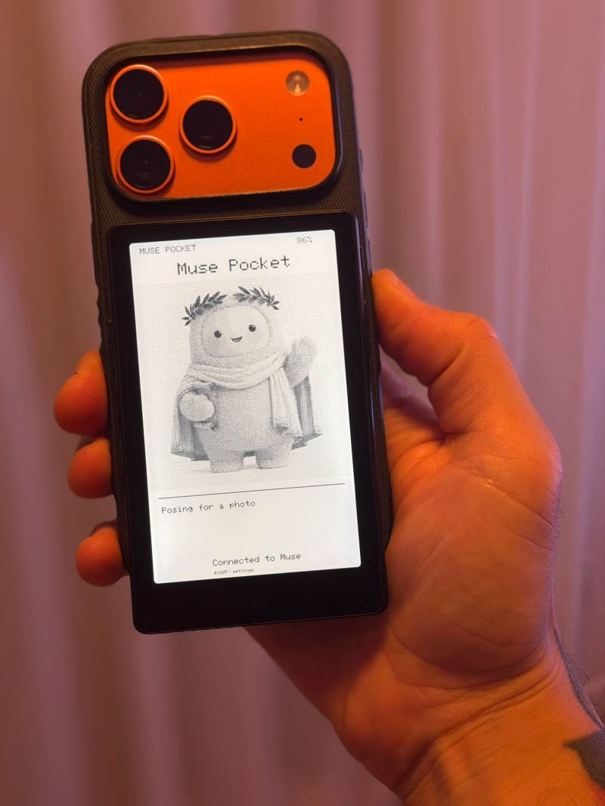

הסוכן מקבל גוף. ובמקרה הזה, הוא יושב על הגב של האייפון.
פורסם במקור ב LinkedIn
הסוכן מקבל גוף. ובמקרה הזה, הוא יושב על הגב של האייפון.
פדריקו ויטיצ'י לקח קורא ספרים אלקטרוני קטן של Xteink והפך אותו למסך של סוכן ה-Muse שלו, Calliope. הדמות שלה מופיעה על המסך, יחד עם השם ועדכוני סטטוס שהיא שולחת אליו.
את כל זה הוא הצמיד במגנט לגב הטלפון. כדי לראות עדכון מהסוכן, הוא פשוט הופך את האייפון. תראו את התמונה 😄
הוא בנה את זה על קוד פתוח שמטא שחררה בשם Muse Gadgets. אפשר לחבר לסוכן מסכים, כפתורים, רמקולים וחיישנים. ויטיצ'י לקח את האפשרות הזאת ובנה לעצמו משהו שאפשר להחזיק ביד.
אני אוהב שהמסך הזה לא מנסה להחליף את האייפון. הוא משתמש בגב שלו, במקום שבדרך כלל יש עליו כיסוי, ונותן לסוכן מקום משלו.
זה גורם לי לחשוב איך הייתי רוצה שהסוכן שלי יופיע מחוץ לשיחה. מסך קטן על השולחן שמראה מה הוא הכין לי? כפתור ליד הדלת שנותן לו סימן שיצאתי? משהו באוטו?
אלה כבר שאלות שאפשר לבנות סביבן משהו. אותו סוכן, עם הזיכרון והמשימות שלו, יכול לקבל ממשק שמתאים למקום שבו אני נמצא.
עד עכשיו בחרנו באיזו אפליקציה לדבר עם הסוכן. פתאום אפשר גם לבחור איפה לשים אותו.
קרדיט לפדריקו ויטיצ'י על הבנייה והצילום.
הפרויקט: https://github.com/viticci/muse-pocket
